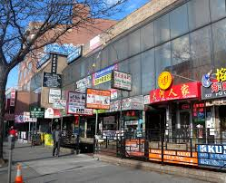
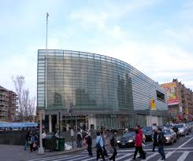

Queens/Flushing
Flushing is a neighborhood in the north-central part of the New York City borough of Queens, in the United States. While much of the neighborhood is residential, Downtown Flushing, centered on the northern end of Main Street, is a large commercial and retail area and is the fourth largest central business district in New York City.Flushing's diversity is reflected by the numerous ethnic groups that reside there, including people of Asian, Hispanic, Middle Eastern, European, and African American ancestry. It is part of the Fifth Congressional District, which encompasses the entire northeastern shore of Queens County, and extends into neighboring Nassau County. Flushing is served by five railroad stations on the Long Island Rail Road Port Washington Branch, as well as the New York City Subway's IRT Flushing Line (7 trains), which has its terminus at Main Street. The intersection of Main Street and Roosevelt Avenue is the third busiest intersection in New York City, behind Times and Herald Squares.

|  |  |
 | |
 |
 |
The Chinese-immigrant population of Flushing, Queens, surpassed that of Manhattan's Chinatown years ago. Roughly two-thirds of the residents in this bustling Queens neighborhood are foreign born—the vast majority of them coming from Asia. Whether you're looking for the most authentic Asian cuisine, an ancient herbal remedy or an impossible-to-find Japanese comic book, Flushing is the place to go. The neighborhood also happens to be home to some of the City's best attractions, including world-class sports venues, lush gardens and performance spaces. So hop on the 7 subway train to the Flushing/Main St. stop for dinner or make a day trip out of touring the various museums; you'll find that Flushing's offerings are as diverse as its residents. Read on for more.
To know more about what to do in Flushing, click here.
| Social Media |


|
| Copyright Charusmita |